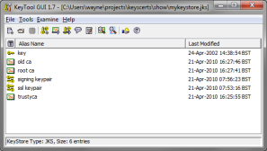

KeyStore Explorer (KSE) has existed, in one form or another, since 2002. These days it is a freeware offering but it has not always been that way. KSE started as an open source project before morphing into a commercial project. It is only relatively recently that it was re-licensed to be free for all to use once again. As the utility is now almost ten years old I feel it is a good time to write a potted history of KSE.
Back in mid-2001 I was a relatively green programmer with only four years of industry experience, mostly in C/C++ and RDBMS. I had just joined an ISV in Glasgow to cross-train as a Java developer. Many things interested me about the language notably its simplicity when compared to C++, the principle of Write Once Run Anywhere (WORA) and the cross-platform GUI toolkit: Swing.
(WORA and Swing are much maligned but not by me. If you put in the effort into each you can reap the benefits. I may dip into these topics in later postings).
All was well in my world. My employer looked to be going places, the fallout from the Dot Com bubble hadn’t yet bitten and I was working with interesting technology. However, to get the full benefit of working with Java and Swing what I really needed was a side-project, something outside of work where I would be free to develop as a chose, free from interference. As a bonus it would be great if the side-project was something new. The last thing I wanted to do was write yet another text editor or world clock, something that had been done a hundred times before.
It was then, in the course of my day job, that I came across keytool. What keytool did intrigued me as I had no previous exposure to Cryptography. How it presented itself, on the other hand, with its ugly command-line interface provided me with an opportunity. I decided I would use Swing to recreate keytool in the form of a friendly GUI. I did some research and discovered that nobody had yet written a decent GUI alternative for keytool. I had found my side-project.
Thanks to the Way Back Machine I have been able to retrieve my exact thoughts at the time. Back then I wrote on the original tool’s website under the heading of “Why Bother”:
“As mentioned above Sun already supply keytool with the Java SDK and the KeyTool GUI is just a GUI implementation of (approximately) the same functionality. So why bother?
I found keytool to be a bugger to use with it’s many and various options. Command-line tools are, after all, invariably harder to use than equivalent GUIs. Secondly keytool forces its users to type in keystore and protected entry passwords in the clear on the command-line. This, of course, defeats the whole purpose of protecting keys in a keystore in the first place! Thirdly I needed a wee project to get me up and running using Swing.
So in an attempt to create an alternative to the command-line keytool utility (and get some practise with Swing) I’ve put together the KeyTool GUI.”
So KeyTool GUI (KTG) was born with the aim for the application being that it not be “a bugger to use”. At first progress was slow as everything was new to me. My Java experience was limited, as was my exposure to GUI programming and UI design and I knew next to nothing about cryptography or PKI. However, it was great fun developing all these new skills. My core Java skills improved far more rapidly than they would have done through my day job alone. I also greatly improved as a UI designer by learning as much as I could from existing applications and various publications. However, what turned out to most challenging was the world of cryptography and PKI. Fortunately with the aid of many books and the Java Cryptography Extensions (JCE) and the Bouncy castle JCE provider I was able to progress in this area rapidly.
Early on I decided to open source my efforts so that others could benefit from my work. I settled on the GPL without too much thought. The idea of open source was new to me too and it struck me as being the most popular license at the time.
I worked for a year to produce version 1.0 releasing alpha and beta candidates during this time. When released in April 2002 version 1.0 was fairly feature rich allowing users to utilise a UI to create, modify and save JKS KeyStores. They could also generate RSA and DSA key pairs, import trusted certificates, create CSRs, import CA Replies and delete and rename KeyStore entries. In other words, the core functionality of keytool.
Over the next 20 months six more versions were released culminating in version 1.7 in January 2004. Many additions were made during this time including extending KeyStore support to include the JCEKS, PKCS #12, BKS and UBER types, the ability to examine Certificates and CRLs, CA Certificates support, PKCS #12 key pair import, a Windows installer as well as many usability improvements.
By version 1.7 KTG could be described as a complete replacement for keytool. However, there was still plenty of room for improvement so I planned to release more versions. After all there was no reason to be limited to simply imitating what keytool could do. Some of the improvements planned included converting the single document interface to support multiple files, to extend support to include more crypto algorithms and file formats and to create installers for other platforms like Mac OSX and Linux.
 Also, despite effort being lavished on making the UI easy to use, it was still a bit ugly, especially in the icon department. The icons were those provided by Sun’s look and feel guide for Swing and some I had cobbled together myself. I had no idea how I could source high quality icons but I was determined to improve what was in KTG at the time. However, I still like the splash screen that I put together for KTG which featured my own set of key ring. In fact I still use the swiss army knife featured on the splash screen above.
Regardless of its limitations the tool was proving popular with over 2,000 downloads a month and I received overwhelmingly positive feedback from users. This helped spur me to carry on development.
In early 2004 I was working on KTG 1.8. Despite this version 1.7 proved to be the last version of KTG released as 1.8 never saw the light of day. I will detail why KTG was abandoned when I continue this history in part two.